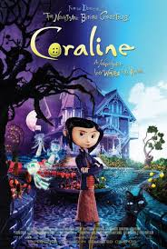

"Coraline (conocida en Hispanoamérica como Coraline y la puerta secreta y en España como Los mundos de Coraline) es una película de animación stop-motion, fantasía oscura y terror de 2009, dirigida por Henry Selick y basada en la novela homónima de Neil Gaiman."
ir a inicio